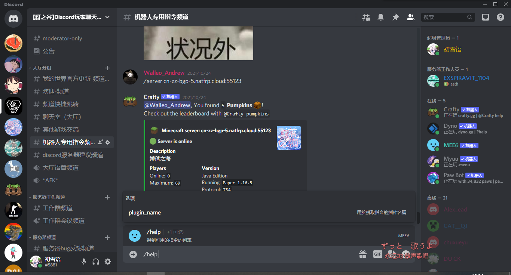
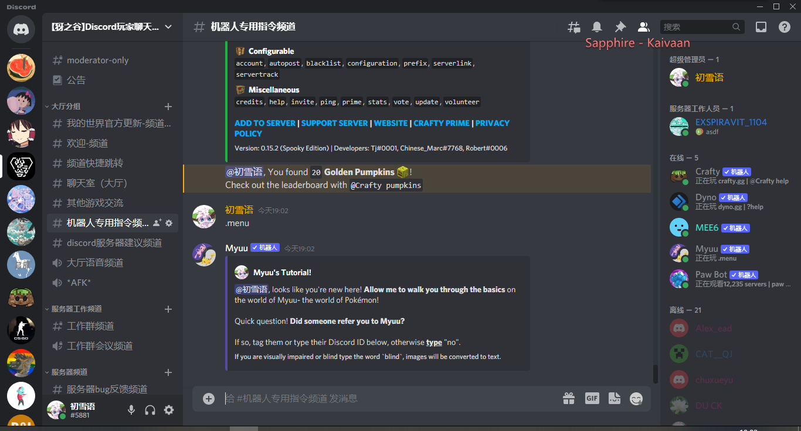
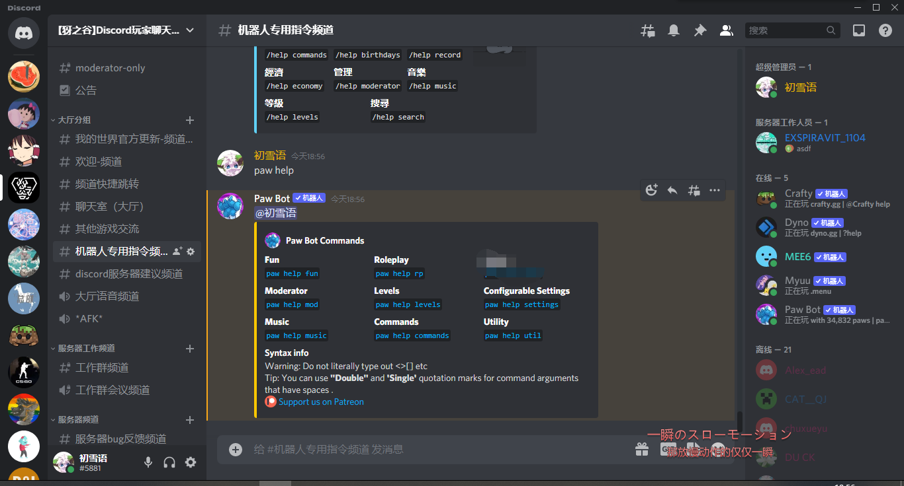
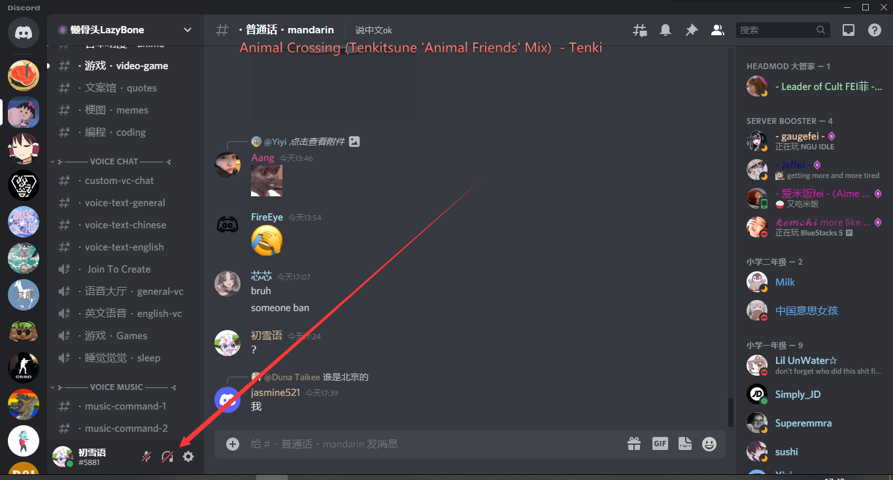
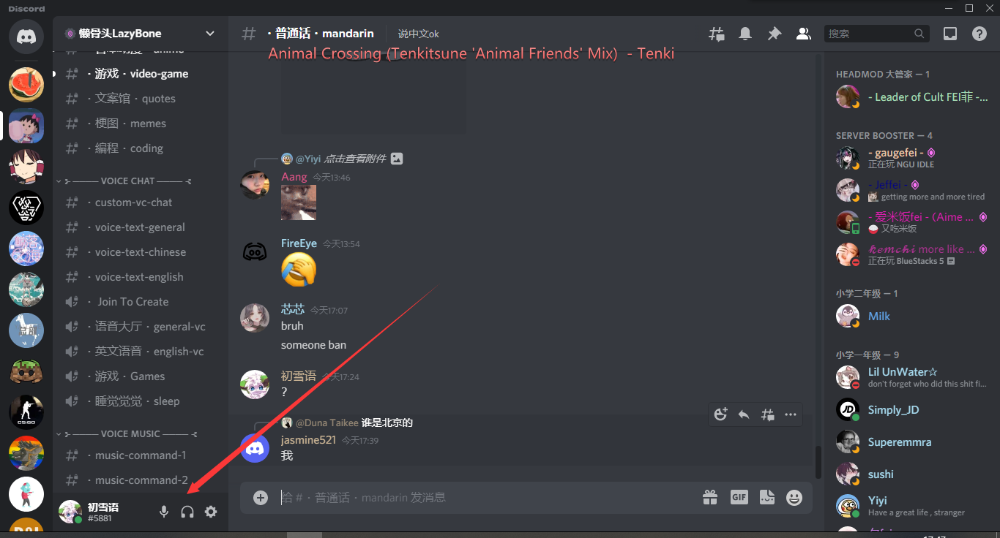
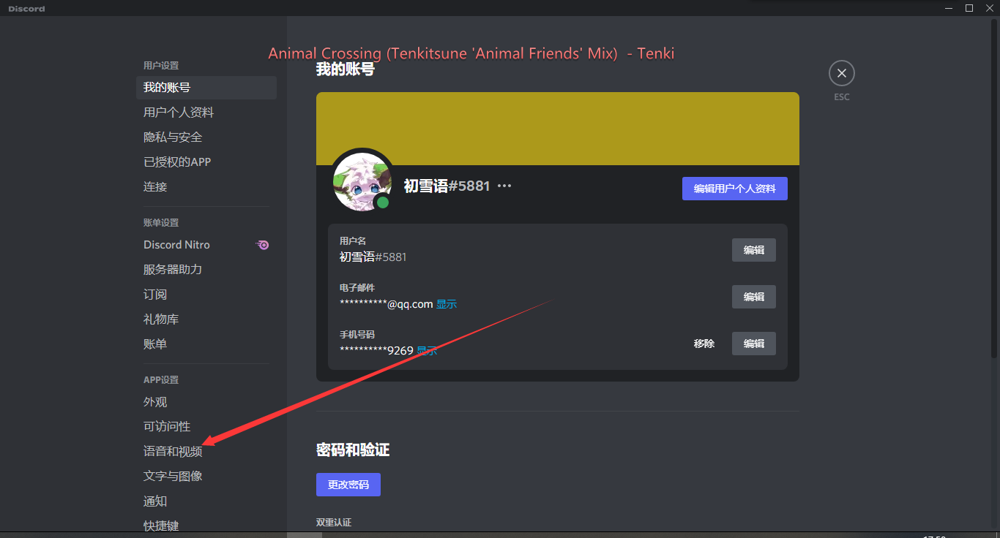
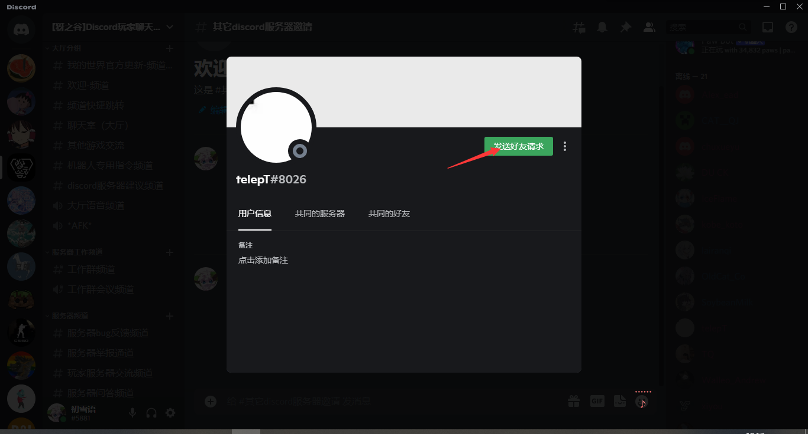
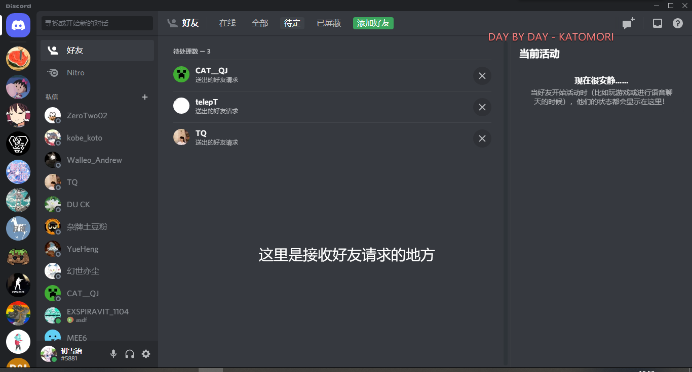

本贴为discord使用过程中的问题的解答
详情请移步到https://report.yallage.com/d/232-discord
请按数字来查看你的问题
1.机器人帮助指令
2.频道太少或者服务器太无聊的解决方法
3.如何创建子区
4.如何加速并加入discord
5.无法显示图片
6.无声音或者无法说话、
7.怎么加好友
本贴为discord使用过程中的问题的解答
详情请移步到https://report.yallage.com/d/232-discord
请按数字来查看你的问题
1.机器人帮助指令
2.频道太少或者服务器太无聊的解决方法
3.如何创建子区
4.如何加速并加入discord
5.无法显示图片
6.无声音或者无法说话、
7.怎么加好友
1.机器人帮助指令
如下图片
!
MEE6的帮助指令

Crafty的帮助指令

Myuu的帮助指令

Paw bot的帮助指令
2.如何看到更多频道或者服务器太无聊的解决方法
————————分割线——————————
1.向下拉

这里可以看到其他成员发起的社区邀请链接
2.社区搜索
这里可以搜索你想要的社区服务器（但是不是所有服务器）（因为小服务器有搜索限制）
4.如何创建子区
——————分割线——————
示例如下：

4.如何加速
https://report.yallage.com/d/232-discord 请看这里
5.无法显示图片
这个我也无能为力，请找一些科学加速或者比steam++更好的加速器
6.无声音或者无法说话
————分割线————
请检查你是否关闭了麦克风或声音，或者静音了耳机和麦克风。如果设备坏了，请自行解决。如果没有问题请看下面


如果都没有错误请看设置


浏览器可能有bug，建议下载程序

7.如何加好友
————分割线————
假如你是添加方请向被加方索要名称和后缀
如果你是被加方请发送给添加方名字和后缀

如果是想添加社区成员的话可以这样：

同意好友请求
